exp1_data <- read.csv("/Users/chandan/Desktop/GitHub/Burst_voice/Data/full_data.csv", header=TRUE)
number_of_subs <- length(unique(exp1_data$sub))
number_of_subs## [1] 26library(lme4)
library(ggplot2)
library(ggeffects)
exp1_data$ons_con <- as.factor(exp1_data$ons_con)
#per_data_cor <- subset(per_data, Correct=="1")
library(tidyverse)
# Create a crosstab table with ons_con on rows, stim_length on columns
# with marginal totals for each row and column
crosstab_table <- exp1_data %>%
group_by(ons_con, stim_length) %>%
summarise(
percent_correct = mean(Correct) * 100,
n = n(),
.groups = "drop"
) %>%
# Add formatted column combining percentage and n
mutate(formatted = paste0(round(percent_correct, 1), "%\n(n=", n, ")")) %>%
select(ons_con, stim_length, formatted) %>%
# Pivot wider to get stim_length as columns
pivot_wider(names_from = stim_length, values_from = formatted)
# Calculate row totals (marginal totals for each ons_con)
row_totals <- exp1_data %>%
group_by(ons_con) %>%
summarise(
percent_correct = mean(Correct) * 100,
n = n(),
.groups = "drop"
) %>%
mutate(Total = paste0(round(percent_correct, 1), "%\n(n=", n, ")")) %>%
select(ons_con, Total)
# Calculate column totals (marginal totals for each stim_length)
col_totals <- exp1_data %>%
group_by(stim_length) %>%
summarise(
percent_correct = mean(Correct) * 100,
n = n(),
.groups = "drop"
) %>%
mutate(formatted = paste0(round(percent_correct, 1), "%\n(n=", n, ")")) %>%
select(stim_length, formatted) %>%
pivot_wider(names_from = stim_length, values_from = formatted) %>%
mutate(ons_con = "Total")
# Calculate overall total
overall_total <- exp1_data %>%
summarise(
percent_correct = mean(Correct) * 100,
n = n()
) %>%
mutate(Total = paste0(round(percent_correct, 1), "%\n(n=", n, ")")) %>%
pull(Total)
# Add row totals to the main table
final_table <- crosstab_table %>%
left_join(row_totals, by = "ons_con")
# Add column totals row
col_totals_row <- col_totals %>%
mutate(Total = overall_total)
# Combine everything
complete_table <- bind_rows(
final_table,
col_totals_row
)
# Display the table
print(complete_table)## # A tibble: 3 × 4
## ons_con long short Total
## <chr> <chr> <chr> <chr>
## 1 k "41%\n(n=156)" "73.8%\n(n=130)" "55.9%\n(n=286)"
## 2 p "44.2%\n(n=156)" "69.2%\n(n=182)" "57.7%\n(n=338)"
## 3 Total "42.6%\n(n=312)" "71.2%\n(n=312)" "56.9%\n(n=624)"# Alternative: Create a cleaner version without the \n formatting
clean_table <- exp1_data %>%
group_by(ons_con, stim_length) %>%
summarise(
percent_correct = round(mean(Correct) * 100, 1),
.groups = "drop"
) %>%
pivot_wider(names_from = stim_length, values_from = percent_correct) %>%
# Add row totals
left_join(
per_data %>%
group_by(ons_con) %>%
summarise(Total = round(mean(Correct) * 100, 1), .groups = "drop"),
by = "ons_con"
)
print(clean_table)## # A tibble: 2 × 4
## ons_con long short Total
## <fct> <dbl> <dbl> <dbl>
## 1 k 41 73.8 60.5
## 2 p 44.2 69.2 53.8# Add column totals
col_totals_clean <- exp1_data %>%
group_by(stim_length) %>%
summarise(percent_correct = round(mean(Correct) * 100, 1), .groups = "drop") %>%
pivot_wider(names_from = stim_length, values_from = percent_correct) %>%
mutate(
ons_con = "Total",
Total = round(mean(exp1_data$Correct) * 100, 1)
)
clean_complete_table <- bind_rows(clean_table, col_totals_clean)
print("\nClean version (percentages only):")## [1] "\nClean version (percentages only):"print(clean_complete_table)## # A tibble: 3 × 4
## ons_con long short Total
## <chr> <dbl> <dbl> <dbl>
## 1 k 41 73.8 60.5
## 2 p 44.2 69.2 53.8
## 3 Total 42.6 71.2 56.9# Fit the mixed-effects logistic regression model with interaction term
exp1_model <- glmer(response_vc ~ stim_length * ons_con + (1 | vowel) + (1 | sub),
data = exp1_data,
family = binomial)
summary(exp1_model)## Generalized linear mixed model fit by maximum likelihood (Laplace
## Approximation) [glmerMod]
## Family: binomial ( logit )
## Formula: response_vc ~ stim_length * ons_con + (1 | vowel) + (1 | sub)
## Data: exp1_data
##
## AIC BIC logLik -2*log(L) df.resid
## 779.2 805.8 -383.6 767.2 618
##
## Scaled residuals:
## Min 1Q Median 3Q Max
## -1.7757 -0.7522 -0.4820 0.9690 2.7645
##
## Random effects:
## Groups Name Variance Std.Dev.
## sub (Intercept) 0.59827 0.7735
## vowel (Intercept) 0.04406 0.2099
## Number of obs: 624, groups: sub, 26; vowel, 3
##
## Fixed effects:
## Estimate Std. Error z value Pr(>|z|)
## (Intercept) -0.4242 0.2606 -1.628 0.10363
## stim_lengthshort -0.7794 0.2727 -2.858 0.00427 **
## ons_conp 0.1484 0.2430 0.611 0.54142
## stim_lengthshort:ons_conp 0.1471 0.3642 0.404 0.68630
## ---
## Signif. codes: 0 '***' 0.001 '**' 0.01 '*' 0.05 '.' 0.1 ' ' 1
##
## Correlation of Fixed Effects:
## (Intr) stm_ln ons_cn
## stm_lngthsh -0.413
## ons_conp -0.471 0.447
## stm_lngth:_ 0.312 -0.749 -0.667# Fully crossed model with random slopes/intercepts
exp1_model_full <- glmer(response_vc ~ stim_length * ons_con + (1 + stim_length + ons_con | sub),
data = exp1_data,
family = binomial, control=glmerControl(optimizer="bobyqa",
optCtrl=list(maxfun=2e5)))## boundary (singular) fit: see help('isSingular')summary(exp1_model_full)## Generalized linear mixed model fit by maximum likelihood (Laplace
## Approximation) [glmerMod]
## Family: binomial ( logit )
## Formula: response_vc ~ stim_length * ons_con + (1 + stim_length + ons_con |
## sub)
## Data: exp1_data
## Control: glmerControl(optimizer = "bobyqa", optCtrl = list(maxfun = 2e+05))
##
## AIC BIC logLik -2*log(L) df.resid
## 770.5 814.9 -375.3 750.5 614
##
## Scaled residuals:
## Min 1Q Median 3Q Max
## -1.7618 -0.6926 -0.3932 0.9810 3.0576
##
## Random effects:
## Groups Name Variance Std.Dev. Corr
## sub (Intercept) 1.44642 1.203
## stim_lengthshort 1.74895 1.322 -0.63
## ons_conp 0.05475 0.234 -0.85 0.13
## Number of obs: 624, groups: sub, 26
##
## Fixed effects:
## Estimate Std. Error z value Pr(>|z|)
## (Intercept) -0.4498 0.2978 -1.511 0.1309
## stim_lengthshort -0.8460 0.3842 -2.202 0.0276 *
## ons_conp 0.1911 0.2534 0.754 0.4508
## stim_lengthshort:ons_conp 0.1362 0.3685 0.370 0.7116
## ---
## Signif. codes: 0 '***' 0.001 '**' 0.01 '*' 0.05 '.' 0.1 ' ' 1
##
## Correlation of Fixed Effects:
## (Intr) stm_ln ons_cn
## stm_lngthsh -0.624
## ons_conp -0.552 0.347
## stm_lngth:_ 0.294 -0.552 -0.664
## optimizer (bobyqa) convergence code: 0 (OK)
## boundary (singular) fit: see help('isSingular')# Singularity problem with random effects structure, so random slopes/intercepts for just one variable
exp1_model_full <- glmer(response_vc ~ stim_length * ons_con + (1 + stim_length | sub),
data = exp1_data,
family = binomial, control=glmerControl(optimizer="bobyqa",
optCtrl=list(maxfun=2e5)))
summary(exp1_model_full)## Generalized linear mixed model fit by maximum likelihood (Laplace
## Approximation) [glmerMod]
## Family: binomial ( logit )
## Formula: response_vc ~ stim_length * ons_con + (1 + stim_length | sub)
## Data: exp1_data
## Control: glmerControl(optimizer = "bobyqa", optCtrl = list(maxfun = 2e+05))
##
## AIC BIC logLik -2*log(L) df.resid
## 765.3 796.4 -375.6 751.3 617
##
## Scaled residuals:
## Min 1Q Median 3Q Max
## -1.6652 -0.6955 -0.4146 0.9570 2.7514
##
## Random effects:
## Groups Name Variance Std.Dev. Corr
## sub (Intercept) 1.207 1.099
## stim_lengthshort 1.752 1.324 -0.69
## Number of obs: 624, groups: sub, 26
##
## Fixed effects:
## Estimate Std. Error z value Pr(>|z|)
## (Intercept) -0.4307 0.2826 -1.524 0.128
## stim_lengthshort -0.8187 0.3904 -2.097 0.036 *
## ons_conp 0.1631 0.2536 0.643 0.520
## stim_lengthshort:ons_conp 0.1001 0.3727 0.269 0.788
## ---
## Signif. codes: 0 '***' 0.001 '**' 0.01 '*' 0.05 '.' 0.1 ' ' 1
##
## Correlation of Fixed Effects:
## (Intr) stm_ln ons_cn
## stm_lngthsh -0.654
## ons_conp -0.454 0.328
## stm_lngth:_ 0.309 -0.538 -0.680## This includes vowel. THIS IS THE MODEL TO USE.
##
exp1_model_full_vowel <- glmer(response_vc ~ stim_length * ons_con * vowel + (1 + stim_length | sub),
data = exp1_data,
family = binomial, control=glmerControl(optimizer="bobyqa",
optCtrl=list(maxfun=2e5)))
summary(exp1_model_full_vowel)## Generalized linear mixed model fit by maximum likelihood (Laplace
## Approximation) [glmerMod]
## Family: binomial ( logit )
## Formula: response_vc ~ stim_length * ons_con * vowel + (1 + stim_length |
## sub)
## Data: exp1_data
## Control: glmerControl(optimizer = "bobyqa", optCtrl = list(maxfun = 2e+05))
##
## AIC BIC logLik -2*log(L) df.resid
## 762.0 828.5 -366.0 732.0 609
##
## Scaled residuals:
## Min 1Q Median 3Q Max
## -2.4329 -0.6669 -0.3806 0.8346 2.8898
##
## Random effects:
## Groups Name Variance Std.Dev. Corr
## sub (Intercept) 1.385 1.177
## stim_lengthshort 1.945 1.394 -0.71
## Number of obs: 624, groups: sub, 26
##
## Fixed effects:
## Estimate Std. Error z value Pr(>|z|)
## (Intercept) -0.1712 0.3889 -0.440 0.65982
## stim_lengthshort -1.1575 0.5440 -2.128 0.03336 *
## ons_conp -0.8346 0.4595 -1.816 0.06929 .
## vowele -0.1984 0.4421 -0.449 0.65357
## voweli -0.6127 0.4515 -1.357 0.17471
## stim_lengthshort:ons_conp 1.0615 0.6587 1.611 0.10707
## stim_lengthshort:vowele 0.1984 0.6531 0.304 0.76130
## stim_lengthshort:voweli 0.9473 0.7263 1.304 0.19217
## ons_conp:vowele 1.8215 0.6463 2.818 0.00483 **
## ons_conp:voweli 1.1480 0.6471 1.774 0.07605 .
## stim_lengthshort:ons_conp:vowele -1.2127 0.9228 -1.314 0.18881
## stim_lengthshort:ons_conp:voweli -1.6704 0.9622 -1.736 0.08257 .
## ---
## Signif. codes: 0 '***' 0.001 '**' 0.01 '*' 0.05 '.' 0.1 ' ' 1
##
## Correlation of Fixed Effects:
## (Intr) stm_ln ons_cn vowele voweli stm_:_
## stm_lngthsh -0.675
## ons_conp -0.543 0.388
## vowele -0.563 0.402 0.479
## voweli -0.552 0.395 0.474 0.487
## stm_lngth:_ 0.379 -0.596 -0.697 -0.334 -0.331
## stim_lengthshort:vowele 0.381 -0.598 -0.324 -0.677 -0.329 0.495
## stim_lengthshort:voweli 0.343 -0.541 -0.295 -0.302 -0.621 0.447
## ons_conp:vowele 0.385 -0.275 -0.719 -0.687 -0.343 0.501
## ons_conp:voweli 0.386 -0.276 -0.713 -0.341 -0.701 0.497
## stim_lengthshort:ons_conp:vowele -0.270 0.418 0.503 0.481 0.240 -0.717
## stim_lengthshort:ons_conp:voweli -0.259 0.410 0.479 0.229 0.471 -0.686
## stim_lengthshort:vowele
## stm_lngthsh
## ons_conp
## vowele
## voweli
## stm_lngth:_
## stim_lengthshort:vowele
## stim_lengthshort:voweli 0.448
## ons_conp:vowele 0.465
## ons_conp:voweli 0.230
## stim_lengthshort:ons_conp:vowele -0.709
## stim_lengthshort:ons_conp:voweli -0.339
## stim_lengthshort:voweli ons_conp:vowele
## stm_lngthsh
## ons_conp
## vowele
## voweli
## stm_lngth:_
## stim_lengthshort:vowele
## stim_lengthshort:voweli
## ons_conp:vowele 0.213
## ons_conp:voweli 0.436 0.514
## stim_lengthshort:ons_conp:vowele -0.321 -0.700
## stim_lengthshort:ons_conp:voweli -0.756 -0.346
## ons_conp:voweli
## stm_lngthsh
## ons_conp
## vowele
## voweli
## stm_lngth:_
## stim_lengthshort:vowele
## stim_lengthshort:voweli
## ons_conp:vowele
## ons_conp:voweli
## stim_lengthshort:ons_conp:vowele -0.360
## stim_lengthshort:ons_conp:voweli -0.672
## stim_lengthshort:ons_conp:vowele
## stm_lngthsh
## ons_conp
## vowele
## voweli
## stm_lngth:_
## stim_lengthshort:vowele
## stim_lengthshort:voweli
## ons_conp:vowele
## ons_conp:voweli
## stim_lengthshort:ons_conp:vowele
## stim_lengthshort:ons_conp:voweli 0.492# Make sure you have the predicted probabilities
exp1_data$predicted <- predict(exp1_model_full_vowel, type = "response")
# Summarize predicted probabilities
summary_df <- exp1_data %>%
group_by(stim_length, ons_con, vowel) %>%
summarise(
mean_prob = mean(predicted),
se_prob = sd(predicted) / sqrt(n()),
.groups = "drop"
) %>%
mutate(
lower_ci = mean_prob - 1.96 * se_prob,
upper_ci = mean_prob + 1.96 * se_prob
)
# Reorder stim_length factor
summary_df$stim_length <- factor(summary_df$stim_length, levels = c("short", "long"))
# Colorful plot with thin lines connecting points
perception_plot <- ggplot(summary_df, aes(x = stim_length, y = mean_prob, color = vowel, group = vowel)) +
geom_line(linewidth = 0.1) +
geom_point(size = 4) +
geom_errorbar(aes(ymin = lower_ci, ymax = upper_ci),
width = 0.15, linewidth = 1) +
facet_wrap(~ ons_con, labeller = labeller(ons_con = c("k" = "/k-/", "p" = "/p-/"))) +
scale_color_viridis_d(option = "plasma", end = 0.85,
labels = c("a" = "æ", "e" = "ɛ", "i" = "ɪ")) +
labs(x = "Long-lag aspiration length",
y = "Predicted Probability of 'Voiced coda' Response",
color = "Vowel") +
theme_minimal(base_size = 14) +
# theme(
# strip.text = element_text(margin = margin_part(b = -18, l = 1)),
# strip.clip = "off",
# panel.spacing = unit(2, "lines"),
# plot.margin = margin(t = 24, r = 12, b = 12, l = 12)
# ) +
theme(
panel.grid.minor = element_blank(),
panel.grid.major = element_line(color = "grey90"),
legend.position = "right",
strip.text = element_text(face = "bold", size = 13, color = "grey20"),
#strip.background = element_rect(fill = "grey95", color = NA),
plot.background = element_rect(fill = "white", color = NA)
)
ggsave("perception_plot.png", dpi=300, width=7, height=5)
###
# Install ggeffects if not already installed
install.packages("ggeffects")##
## The downloaded binary packages are in
## /var/folders/qh/gx03dj_n5zggprvm5n2lcbnr0000gn/T//RtmpMEhR4L/downloaded_packages# Load the package
library(ggeffects)
# Generate predicted probabilities for `stim_length`
probabilities <- ggpredict(exp1_model, terms = "stim_length")## You are calculating adjusted predictions on the population-level (i.e.
## `type = "fixed"`) for a *generalized* linear mixed model.
## This may produce biased estimates due to Jensen's inequality. Consider
## setting `bias_correction = TRUE` to correct for this bias.
## See also the documentation of the `bias_correction` argument.# Print the probabilities
print(probabilities)## # Predicted probabilities of response_vc
##
## stim_length | Predicted | 95% CI
## ------------------------------------
## long | 0.40 | 0.37, 0.42
## short | 0.23 | 0.21, 0.25
##
## Adjusted for:
## * ons_con = k
## * vowel = 0 (population-level)
## * sub = 0 (population-level)# Plot the probabilities
plot(probabilities)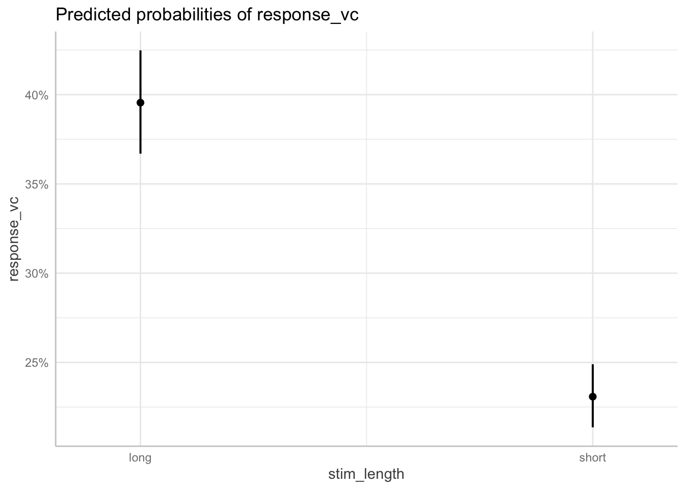
# Install if needed
# install.packages("brms")
# Trying out Bayes
library(brms)## Loading required package: Rcpp## Loading 'brms' package (version 2.23.0). Useful instructions
## can be found by typing help('brms'). A more detailed introduction
## to the package is available through vignette('brms_overview').##
## Attaching package: 'brms'## The following object is masked from 'package:lme4':
##
## ngrps## The following object is masked from 'package:stats':
##
## arexp1_model_bayes <- brm(response_vc ~ stim_length * ons_con + (1 + stim_length | sub),
data = exp1_data,
family = bernoulli(),
chains = 4,
iter = 2000,
cores = 4)## Compiling Stan program...## Loading required namespace: lmerTest## Start sampling# Check the model
summary(exp1_model_bayes)
plot(exp1_model_bayes)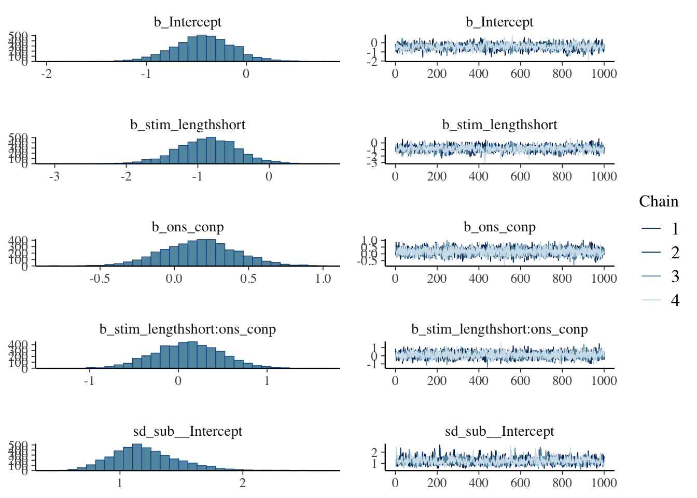
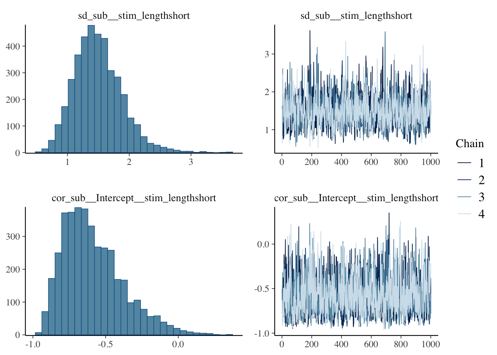
# Check the coding of stim_length
table(exp1_data$stim_length)
levels(factor(exp1_data$stim_length))
# Check what the reference level is
contrasts(factor(exp1_data$stim_length))
## Get the actual probabilities from the model
# Extract coefficients
fixef(exp1_model_bayes)
# For long stimuli, ons_con at reference level:
intercept <- -0.34
prob_long_ref <- plogis(intercept) # plogis converts log-odds to probability
prob_long_ref # Should be around 0.42
# For short stimuli, ons_con at reference level:
prob_short_ref <- plogis(intercept + (-1.34))
prob_short_ref # Should be around 0.17
# For long stimuli, ons_con = "p":
prob_long_p <- plogis(intercept + (-0.08))
prob_long_p
# For short stimuli, ons_con = "p":
prob_short_p <- plogis(intercept + (-1.34) + (-0.08) + 1.07)
prob_short_p
# Load required libraries
library(brms)
library(ggplot2)
library(dplyr)
library(tidyr)
# Create a grid of predictor values to get estimates for each condition
# Get unique values of your predictors
stim_lengths <- unique(exp1_data$stim_length)
ons_cons <- unique(exp1_data$ons_con)
# Create prediction grid
pred_grid <- expand.grid(
stim_length = stim_lengths,
ons_con = ons_cons
)
# Get posterior predictions for each condition
# Get the full posterior draws first
posterior_draws <- posterior_epred(exp1_model_bayes,
newdata = pred_grid,
allow_new_levels = TRUE,
re_formula = NA) # This marginalizes over random effects
# Calculate summary statistics manually
posterior_summary <- apply(posterior_draws, 2, function(x) {
c(estimate = mean(x),
lower = quantile(x, 0.025),
upper = quantile(x, 0.975))
})
# Combine predictions with the grid
plot_data <- pred_grid %>%
mutate(
estimate = posterior_summary[1, ],
lower = posterior_summary[2, ],
upper = posterior_summary[3, ]
)
# Create the plot
ggplot(plot_data, aes(x = factor(ons_con, levels = c("p", "k")), y = estimate, color = factor(stim_length))) +
geom_point(size = 3, position = position_dodge(width = 0.1)) +
geom_errorbar(aes(ymin = lower, ymax = upper),
width = 0.05,
size = 1,
position = position_dodge(width = 0.1)) +
labs(
title = "Bayesian Model Estimates by Stimulus Length and Onset Condition",
x = "Onset Condition",
y = "Predicted probability of a perceived VOICED coda",
color = "Stimulus Length"
) +
theme_minimal() +
theme(
legend.position = "bottom",
plot.title = element_text(hjust = 0.5, size = 14),
axis.text = element_text(size = 12),
axis.title = element_text(size = 12),
legend.text = element_text(size = 11),
panel.grid.major = element_line(color = "grey90", size = 0.5),
panel.grid.minor = element_line(color = "grey95", size = 0.3)
) +
scale_y_continuous(limits = c(0, 1), labels = scales::percent_format())## Warning: Using `size` aesthetic for lines was deprecated in ggplot2 3.4.0.
## ℹ Please use `linewidth` instead.
## This warning is displayed once per session.
## Call `lifecycle::last_lifecycle_warnings()` to see where this
## warning was generated.## Warning: The `size` argument of `element_line()` is deprecated as of ggplot2
## 3.4.0.
## ℹ Please use the `linewidth` argument instead.
## This warning is displayed once per session.
## Call `lifecycle::last_lifecycle_warnings()` to see where this
## warning was generated.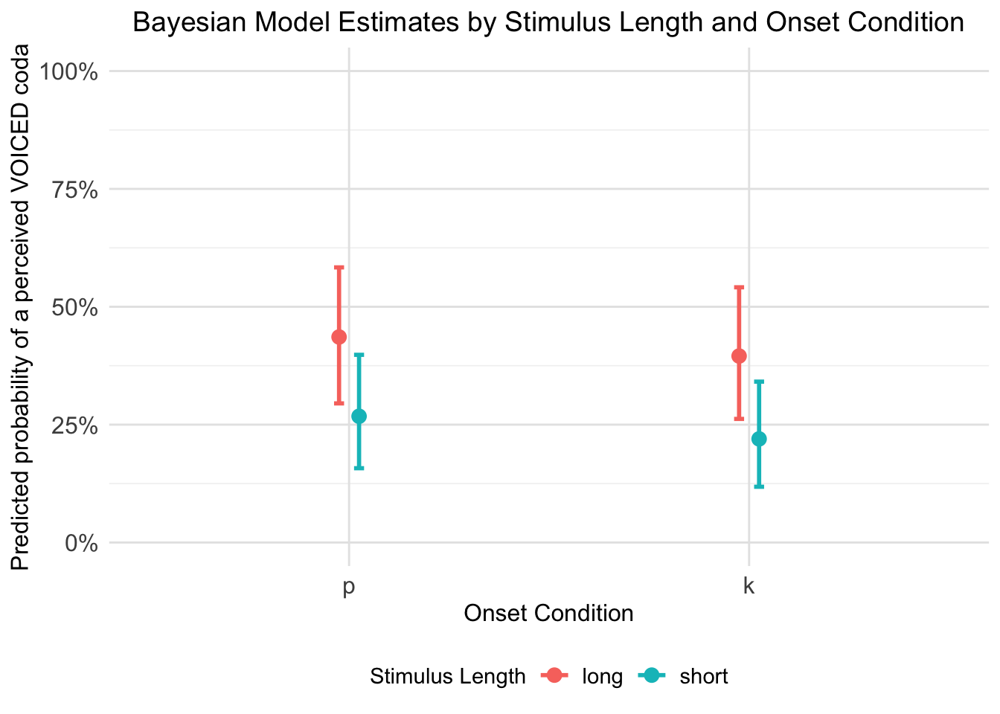
# Alternative version with different styling
ggplot(plot_data, aes(x = factor(ons_con, levels = c("p", "k")), y = estimate, color = factor(stim_length))) +
geom_point(size = 4, position = position_dodge(width = 0.3)) +
geom_errorbar(aes(ymin = lower, ymax = upper),
width = 0.2,
size = 1.2,
position = position_dodge(width = 0.3)) +
labs(
title = "Model Estimates with 95% Credible Intervals",
x = "Onset",
y = "Predicted probability of a perceived VOICED coda",
color = "Stimulus Length"
) +
theme_classic() +
theme(
legend.position = "right",
plot.title = element_text(hjust = 0.5, size = 16, face = "bold"),
axis.text = element_text(size = 12),
axis.title = element_text(size = 14),
legend.title = element_text(size = 12, face = "bold"),
legend.text = element_text(size = 11),
panel.grid.major = element_line(color = "grey90", size = 0.5),
panel.grid.minor = element_line(color = "grey95", size = 0.3)
) +
scale_y_continuous(limits = c(0, 1), labels = scales::percent_format())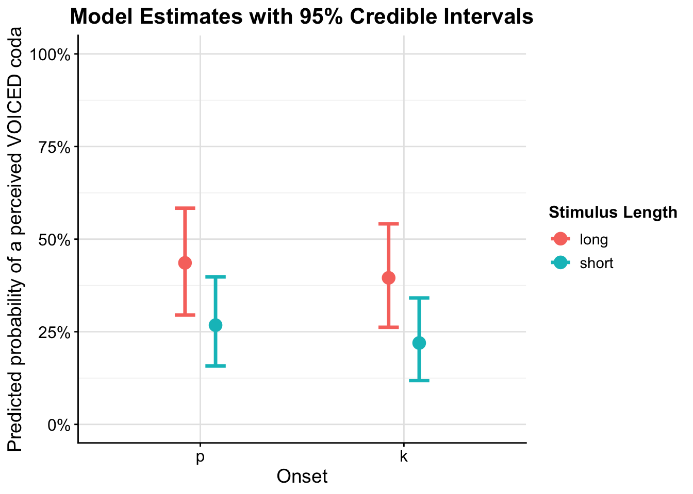
# If you want to see the actual data values used:
print("Prediction grid and estimates:")
print(plot_data)The negative coefficient for stim_lengthshort (-1.33) means that short stimulus length decreases the probability that response_vc = 1 In other words: long stimuli have higher probability of voiced coda perception than short stimuli
This matches your plot perfectly - you can see that the points for long stimuli (one color) are higher on the y-axis than the points for short stimuli (other color) for both onset conditions. In practical terms:
Long stimuli → higher probability of perceiving a voiced coda Short stimuli → lower probability of perceiving a voiced coda The interaction shows this length effect is stronger for /k/ onsets than /p/ onsets
# # Load required libraries
# library(brms) # Load brms first
# library(ggplot2)
# library(bayesplot) # Load bayesplot after brms
# rhat <- brms::rhat
#
# # 1. CONVERGENCE DIAGNOSTICS (Most Important)
# # Check Rhat values (should be < 1.01, ideally < 1.001)
# rhat_values <- rhat(per_model_bayes)
# print("Rhat values:")
# print(rhat_values)
#
# # Check effective sample sizes
# #ess_bulk <- neff_ratio(per_model_bayes)
# # For tail ESS, check the summary or use posterior package
# # Check convergence diagnostics
# summary(per_model_bayes) # This shows Bulk_ESS and Tail_ESS in the output
# model_summary <- summary(per_model_bayes)
# print("Effective Sample Size ratios (should be > 0.1):")
# print(paste("Bulk ESS ratio range:", round(min(ess_bulk), 3), "to", round(max(ess_bulk), 3)))
# print(paste("Tail ESS ratio range:", round(min(ess_tail), 3), "to", round(max(ess_tail), 3)))
#
# # 2. TRACE PLOTS (Visual convergence check)
# plot(per_model_bayes, pars = c("b_Intercept", "b_stim_lengthshort",
# "b_ons_conp", "b_stim_lengthshort:ons_conp"))
#
# # 3. POSTERIOR PREDICTIVE CHECKS
# # Check if model reproduces key patterns in the data
# pp_check(per_model_bayes, ndraws = 100)
#
# # More specific posterior predictive checks
# pp_check(per_model_bayes, type = "bars", ndraws = 500) # For binary data
# pp_check(per_model_bayes, type = "stat", stat = "mean", ndraws = 1000)
# pp_check(per_model_bayes, type = "stat_grouped",
# stat = "mean", group = "stim_length", ndraws = 500)
#
# # 4. MODEL COMPARISON (if you have alternative models)
# # Example: Compare to simpler models
# # per_model_simple <- brm(response_vc ~ stim_length + ons_con + (1|sub),
# # data = per_data, family = bernoulli())
# # loo_compare(loo(per_model_bayes), loo(per_model_simple))
#
# # 5. RESIDUAL DIAGNOSTICS
# # For mixed effects models, check residuals at different levels
# residuals_plot <- plot(per_model_bayes, type = "residuals")
# print(residuals_plot)
#
# # 6. RANDOM EFFECTS DIAGNOSTICS
# # Check if random effects are reasonable
# plot(per_model_bayes, pars = "^r_sub")
#
# # Check random effects correlations
# plot(per_model_bayes, pars = "cor")
#
# # 7. MCMC DIAGNOSTICS
# # Check for divergent transitions
# nuts_params <- nuts_params(per_model_bayes)
# print("Number of divergent transitions:")
# sum(subset(nuts_params, Parameter == "divergent__")$Value)
#
# # Energy diagnostics
# mcmc_nuts_energy(nuts_params)
#
# # 8. MODEL SUMMARY FOR REPORTING
# print("=== MODEL SUMMARY FOR REPORTING ===")
# summary(per_model_bayes)
#
# # 9. LEAVE-ONE-OUT CROSS-VALIDATION
# loo_result <- loo(per_model_bayes)
# print(loo_result)
#
# # Check for problematic observations
# plot(loo_result)
#
# # 10. PRIOR-POSTERIOR COMPARISON (if you set informative priors)
# # Check if priors were reasonable
# prior_summary(per_model_bayes)
#
# # 11. R-SQUARED (Bayesian version)
# bayes_R2(per_model_bayes)
#
# # 12. WHAT TO REPORT IN YOUR PAPER
# cat("
# === DIAGNOSTICS TO REPORT ===
#
# 1. CONVERGENCE:
# - All Rhat values < 1.01 (report range)
# - Effective sample sizes > 400 for all parameters
# - No divergent transitions
#
# 2. MODEL FIT:
# - Posterior predictive checks show model reproduces data patterns
# - LOO-CV information criterion for model comparison
# - Bayesian R-squared for explained variance
#
# 3. SAMPLE DESCRIPTION:
# - 4 chains, 2000 iterations each (1000 warmup)
# - Total of 4000 post-warmup draws
# - MCMC sampling using NUTS algorithm
#
# Example text for methods:
# 'Model convergence was assessed using Rhat statistics (all < 1.01)
# and effective sample sizes (all > 400). Posterior predictive checks
# confirmed the model adequately reproduced the observed data patterns.
# No divergent transitions were observed during sampling.'
# ")
#
# # 13. SPECIFIC CHECKS FOR YOUR MODEL
# # Check interaction effects visually
# marginal_effects(per_model_bayes, effects = "stim_length:ons_con")
#
# # Check if random effects structure is justified
# # Compare models with/without random slopes
# # This helps justify the complexity of your random effectsRhat < 1.01 for all parameters (yours look good: all ≈ 1.00) Effective sample sizes > 400 (yours are excellent: 862-4104) No divergent transitions
Posterior predictive checks (pp_check()) - shows if model reproduces data patterns LOO cross-validation for model comparison Bayesian R² for explained variance
Perfect Rhat values (all 1.00-1.01) High effective sample sizes Good mixing indicated by the diagnostics
The most important ones to run and report are the convergence checks (which you already have) and posterior predictive checks to show your model actually fits the data well.
library(brms)
library(ggplot2)
library(dplyr)
library(tidyr)
# Fit Bayesian model with three-way interaction
exp1_model_bayes <- brm(response_vc ~ stim_length * ons_con * vowel + (1 + stim_length | sub),
data = exp1_data,
family = bernoulli(),
chains = 4,
iter = 2000,
cores = 4)## Compiling Stan program...## Start sampling# Check the model
summary(exp1_model_bayes)
plot(exp1_model_bayes)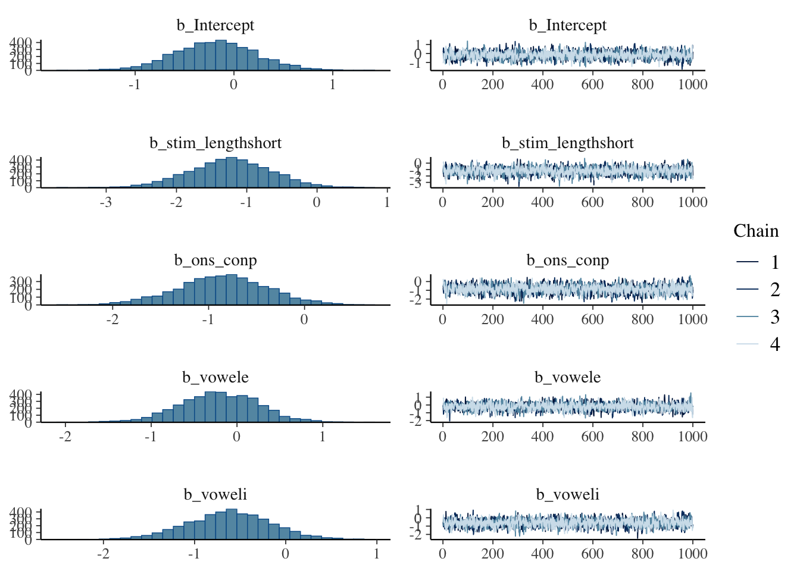
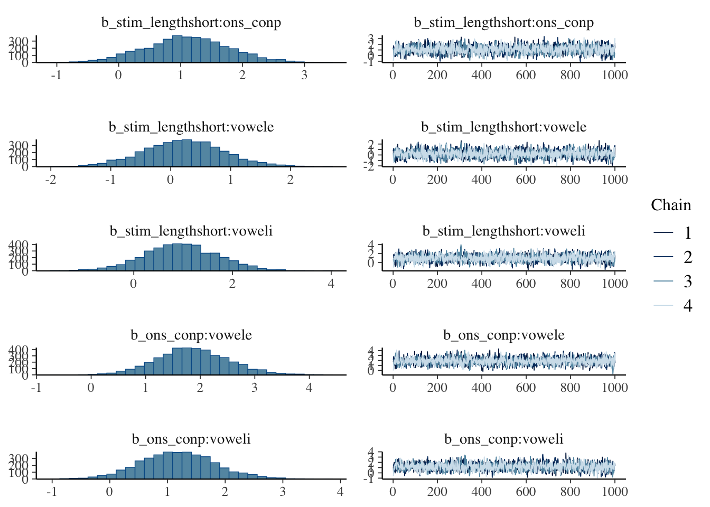
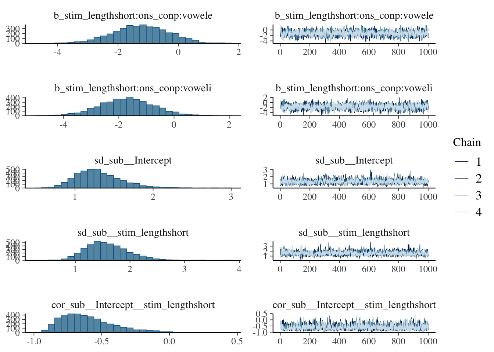
# Check the coding of all factors
table(exp1_data$stim_length)
table(exp1_data$ons_con)
table(exp1_data$vowel)
levels(factor(exp1_data$stim_length))
levels(factor(exp1_data$ons_con))
levels(factor(exp1_data$vowel))
# Check what the reference levels are
contrasts(factor(exp1_data$stim_length))
contrasts(factor(exp1_data$ons_con))
contrasts(factor(exp1_data$vowel))
# Extract coefficients
fixef(exp1_model_bayes)## -0.8576139 0.4724470 -1.80378866 0.07466402
## vowele -0.2076378 0.4525533 -1.09723436 0.67954730
## voweli -0.6220140 0.4614466 -1.53951994 0.28984113
## stim_lengthshort:ons_conp 1.1053367 0.6774453 -0.21573798 2.44721127
## stim_lengthshort:vowele 0.2209341 0.6685230 -1.08131943 1.57655892
## stim_lengthshort:voweli 0.9525533 0.7479161 -0.52890666 2.42012722
## ons_conp:vowele 1.8677413 0.6618042 0.60040695 3.19939621
## ons_conp:voweli 1.1792037 0.6474013 -0.07339209 2.49764548
## stim_lengthshort:ons_conp:vowele -1.2464913 0.9440852 -3.11545767 0.53326036
## stim_lengthshort:ons_conp:voweli -1.7051668 0.9806785 -3.64790234 0.23201084# Create a comprehensive grid of predictor values
stim_lengths <- unique(exp1_data$stim_length)
ons_cons <- unique(exp1_data$ons_con)
vowels <- unique(exp1_data$vowel)
# Create prediction grid for all combinations
pred_grid <- expand.grid(
stim_length = stim_lengths,
ons_con = ons_cons,
vowel = vowels
)
# Get posterior predictions for each condition
posterior_draws <- posterior_epred(exp1_model_bayes,
newdata = pred_grid,
allow_new_levels = TRUE,
re_formula = NA) # This marginalizes over random effects
# Calculate summary statistics
posterior_summary <- apply(posterior_draws, 2, function(x) {
c(estimate = mean(x),
lower = quantile(x, 0.025),
upper = quantile(x, 0.975))
})
# Combine predictions with the grid
plot_data <- pred_grid %>%
mutate(
estimate = posterior_summary[1, ],
lower = posterior_summary[2, ],
upper = posterior_summary[3, ]
)
# Print the prediction data to see all combinations
print("Prediction grid and estimates for all conditions:")## [1] "Prediction grid and estimates for all conditions:"print(plot_data)## stim_length ons_con vowel estimate lower upper
## 1 long k e 0.4068749 0.22620346 0.5942371
## 2 short k e 0.2055985 0.09005887 0.3567423
## 3 long p e 0.6438754 0.44770737 0.8153012
## 4 short p e 0.3736163 0.19940604 0.5650380
## 5 long k a 0.4555974 0.27220126 0.6542022
## 6 short k a 0.2038003 0.08978155 0.3655166
## 7 long p a 0.2687936 0.12741530 0.4431747
## 8 short p a 0.2451843 0.11135381 0.4138481
## 9 long k i 0.3153383 0.16220685 0.5092804
## 10 short k i 0.2650142 0.09714235 0.4849871
## 11 long p i 0.3854432 0.21255122 0.5770398
## 12 short p i 0.2099232 0.10267883 0.3441397# Basic plot with faceting by vowel
# Create custom labeller for vowel facets
vowel_labels <- c("a" = "æ", "i" = "ɪ", "e" = "ɛ")
p1 <- ggplot(plot_data, aes(x = factor(ons_con, levels = c("p", "k")),
y = estimate,
color = factor(stim_length))) +
geom_point(size = 3, position = position_dodge(width = 0.5)) +
geom_errorbar(aes(ymin = lower, ymax = upper),
width = 0.1,
size = 1,
position = position_dodge(width = 0.5)) +
facet_wrap(~ vowel, labeller = labeller(vowel = vowel_labels)) +
labs(
#title = "Bayesian Model Estimates: Three-Way Interaction",
#subtitle = "Aspiration Length × Onset place × Vowel",
x = "Onset place",
y = "Predicted probability of perceived VOICED coda",
color = "Aspiration length"
) +
theme_minimal() +
theme(
legend.position = "right",
plot.title = element_text(hjust = 0.5, size = 14, face = "bold"),
plot.subtitle = element_text(hjust = 0.5, size = 12),
axis.text = element_text(size = 12),
axis.title = element_text(size = 14),
axis.text.x = element_text(margin = margin(b = 10)),
legend.text = element_text(size = 10),
strip.text = element_text(size = 14, family = "Helvetica"),
strip.background = element_rect(fill = "grey90", color = "grey70", size = 0.5), # Light background
panel.grid.major = element_line(color = "grey90", size = 0.5),
panel.grid.minor = element_line(color = "grey95", size = 0.3)
) +
scale_y_continuous(limits = c(0, 1), labels = scales::percent_format())## Warning: The `size` argument of `element_rect()` is deprecated as of ggplot2
## 3.4.0.
## ℹ Please use the `linewidth` argument instead.
## This warning is displayed once per session.
## Call `lifecycle::last_lifecycle_warnings()` to see where this
## warning was generated.print(p1)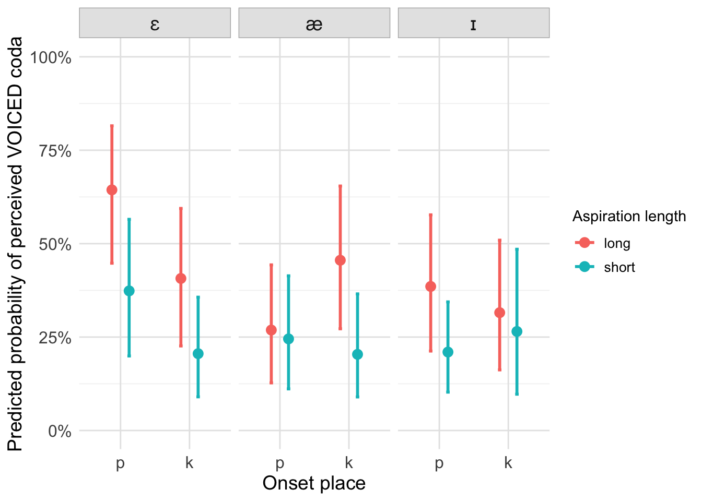
# Alternative options for different background styles:
# Option 2: Slightly darker background with rounded corners
p1_rounded <- ggplot(plot_data, aes(x = factor(ons_con, levels = c("p", "k")),
y = estimate,
color = factor(stim_length))) +
geom_point(size = 3, position = position_dodge(width = 0.2)) +
geom_errorbar(aes(ymin = lower, ymax = upper),
width = 0.1,
size = 1,
position = position_dodge(width = 0.2)) +
facet_wrap(~ vowel, labeller = labeller(vowel = vowel_labels)) +
labs(
title = "Bayesian Model Estimates: Three-Way Interaction",
subtitle = "Aspiration Length × Onset place × Vowel",
x = "Onset place",
y = "Predicted probability of perceived VOICED coda",
color = "Aspiration Length"
) +
theme_minimal() +
theme(
legend.position = "bottom",
plot.title = element_text(hjust = 0.5, size = 14, face = "bold"),
plot.subtitle = element_text(hjust = 0.5, size = 12),
axis.text = element_text(size = 10),
axis.title = element_text(size = 12),
legend.text = element_text(size = 10),
strip.text = element_text(size = 14, face = "bold", family = "Times New Roman"),
strip.background = element_rect(fill = "lightblue", color = "steelblue", size = 0.8),
panel.grid.major = element_line(color = "grey90", size = 0.5),
panel.grid.minor = element_line(color = "grey95", size = 0.3)
) +
scale_y_continuous(limits = c(0, 1), labels = scales::percent_format())
print(p1_rounded)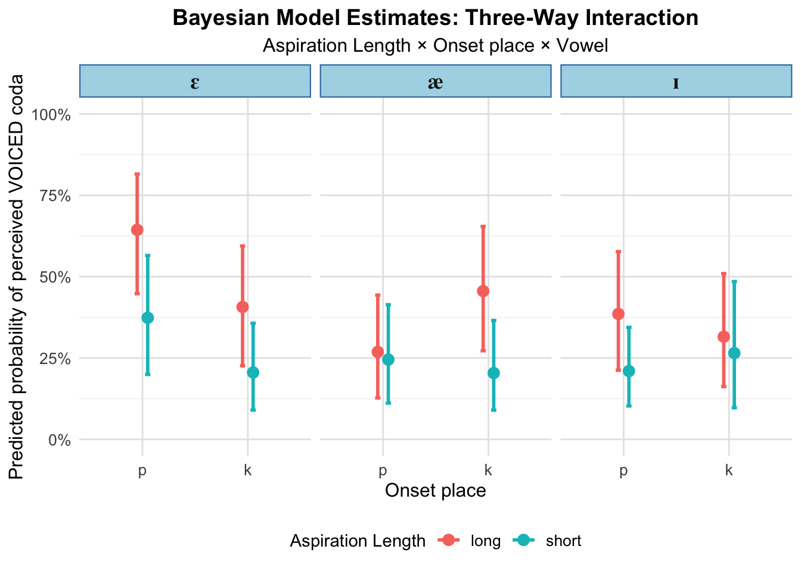
# Option 3: Very subtle background
p1_subtle <- ggplot(plot_data, aes(x = factor(ons_con, levels = c("p", "k")),
y = estimate,
color = factor(stim_length))) +
geom_point(size = 3, position = position_dodge(width = 0.2)) +
geom_errorbar(aes(ymin = lower, ymax = upper),
width = 0.1,
size = 1,
position = position_dodge(width = 0.2)) +
facet_wrap(~ vowel, labeller = labeller(vowel = vowel_labels)) +
labs(
title = "Bayesian Model Estimates: Three-Way Interaction",
subtitle = "Aspiration Length × Onset place × Vowel",
x = "Onset place",
y = "Predicted probability of a perceived VOICED coda",
color = "Aspiration Length"
) +
theme_minimal() +
theme(
legend.position = "bottom",
plot.title = element_text(hjust = 0.5, size = 14, face = "bold"),
plot.subtitle = element_text(hjust = 0.5, size = 12),
axis.text = element_text(size = 11),
axis.title = element_text(size = 12),
legend.text = element_text(size = 10),
strip.text = element_text(size = 14, face = "bold", family = "Times New Roman"),
strip.background = element_rect(fill = "white", color = "grey60", size = 0.3),
panel.grid.major = element_line(color = "grey90", size = 0.5),
panel.grid.minor = element_line(color = "grey95", size = 0.3)
) +
scale_y_continuous(limits = c(0, 1), labels = scales::percent_format())
print(p1_subtle)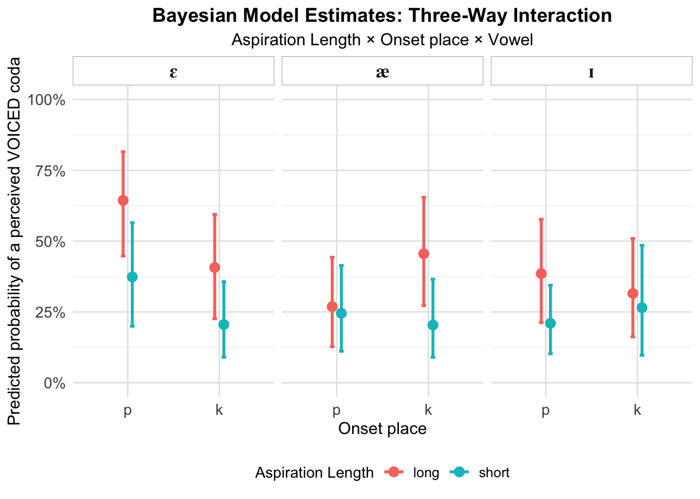
library(dplyr)
library(ggplot2)
library(tidyr)
# ============================================================================
# 1. EXTRACT SUBJECT-SPECIFIC COEFFICIENTS FROM MODEL
# ============================================================================
# Get subject-specific coefficients (population + random effects)
subject_coefs <- coef(exp1_model_bayes)$sub[, , "stim_lengthshort"]
# Convert to dataframe
subject_slopes <- data.frame(
subject = rownames(subject_coefs),
estimate = subject_coefs[, "Estimate"],
lower_ci = subject_coefs[, "Q2.5"],
upper_ci = subject_coefs[, "Q97.5"],
std_error = subject_coefs[, "Est.Error"]
) %>%
mutate(subject = as.character(subject)) # Ensure character type
# ============================================================================
# 2. CATEGORIZE SUBJECTS BY EFFECT STRENGTH
# ============================================================================
subject_slopes <- subject_slopes %>%
mutate(
effect_category = case_when(
upper_ci < 0 ~ "Strong negative effect",
lower_ci < 0 & upper_ci > 0 ~ "Weak/uncertain effect",
lower_ci > 0 ~ "Positive effect (opposite)",
TRUE ~ "Other"
),
ci_width = upper_ci - lower_ci,
abs_effect = abs(estimate)
)
# Print summary
cat("SUBJECT CATEGORIZATION BY STIM_LENGTH EFFECT\n")## SUBJECT CATEGORIZATION BY STIM_LENGTH EFFECTcat("=============================================\n\n")## =============================================table(subject_slopes$effect_category)##
## Strong negative effect Weak/uncertain effect
## 5 21cat("\n\nSubjects with strong negative effect (short reduces voicing):\n")##
##
## Subjects with strong negative effect (short reduces voicing):print(subject_slopes %>%
filter(effect_category == "Strong negative effect") %>%
arrange(estimate) %>%
select(subject, estimate, lower_ci, upper_ci))## subject estimate lower_ci upper_ci
## 14070622 14070622 -4.822757 -7.750302 -2.40091327
## 14090662 14090662 -4.784882 -7.887038 -2.40125282
## 14085713 14085713 -2.409373 -4.290656 -0.64895648
## 14566462 14566462 -2.341808 -4.403507 -0.50130472
## 14555057 14555057 -1.794725 -3.673936 -0.06166106cat("\n\nSubjects with weak/uncertain effect:\n")##
##
## Subjects with weak/uncertain effect:print(subject_slopes %>%
filter(effect_category == "Weak/uncertain effect") %>%
arrange(desc(abs_effect)) %>%
select(subject, estimate, lower_ci, upper_ci))## subject estimate lower_ci upper_ci
## 14543142 14543142 -2.05888276 -4.641324 0.05772418
## 14123048 14123048 -1.72666670 -4.246156 0.55845904
## 14615934 14615934 -1.49072041 -3.625500 0.45192411
## 14616407 14616407 -1.33270043 -3.259901 0.50965108
## 14533872 14533872 -1.22785613 -2.924942 0.46625367
## 14177725 14177725 -1.21872996 -2.954222 0.43870875
## 14556945 14556945 -0.94027138 -2.668880 0.79808887
## 14504462 14504462 -0.93527991 -2.672198 0.77306365
## 14412928 14412928 -0.79501933 -3.654632 1.88906878
## 14092047 14092047 -0.74997555 -3.057640 1.46498574
## 14141017 14141017 -0.69308145 -2.672042 1.30327942
## 14566767 14566767 -0.67373766 -2.433561 1.09569460
## 14213003 14213003 -0.65851818 -2.392917 1.00123176
## 14542800 14542800 -0.38329830 -2.105126 1.37505658
## 14615725 14615725 -0.37535926 -2.038667 1.34773949
## 14555178 14555178 -0.35624389 -2.068757 1.43551006
## 14156758 14156758 -0.34660230 -2.144661 1.39156701
## 14090119 14090119 -0.34022907 -2.104494 1.54205154
## 14566668 14566668 -0.08112321 -1.743558 1.64545256
## 14171928 14171928 -0.03203044 -1.785053 1.74796610
## 14533455 14533455 0.02245869 -1.788062 1.86884751# ============================================================================
# 3. VISUALIZE SUBJECT-SPECIFIC EFFECTS
# ============================================================================
# Forest plot of subject effects
p1 <- ggplot(subject_slopes, aes(x = reorder(subject, estimate), y = estimate,
color = effect_category)) +
geom_point(size = 3) +
geom_errorbar(aes(ymin = lower_ci, ymax = upper_ci), width = 0.3) +
geom_hline(yintercept = 0, linetype = "dashed", color = "red", linewidth = 0.8) +
coord_flip() +
labs(
title = "Subject-Specific Effects of Short Stimuli on Voicing Perception",
subtitle = "Negative values = short stimuli reduce voicing responses",
x = "Subject",
y = "Log-odds effect of short (vs. long) stimuli",
color = "Effect Type"
) +
theme_minimal() +
theme(legend.position = "bottom")
print(p1)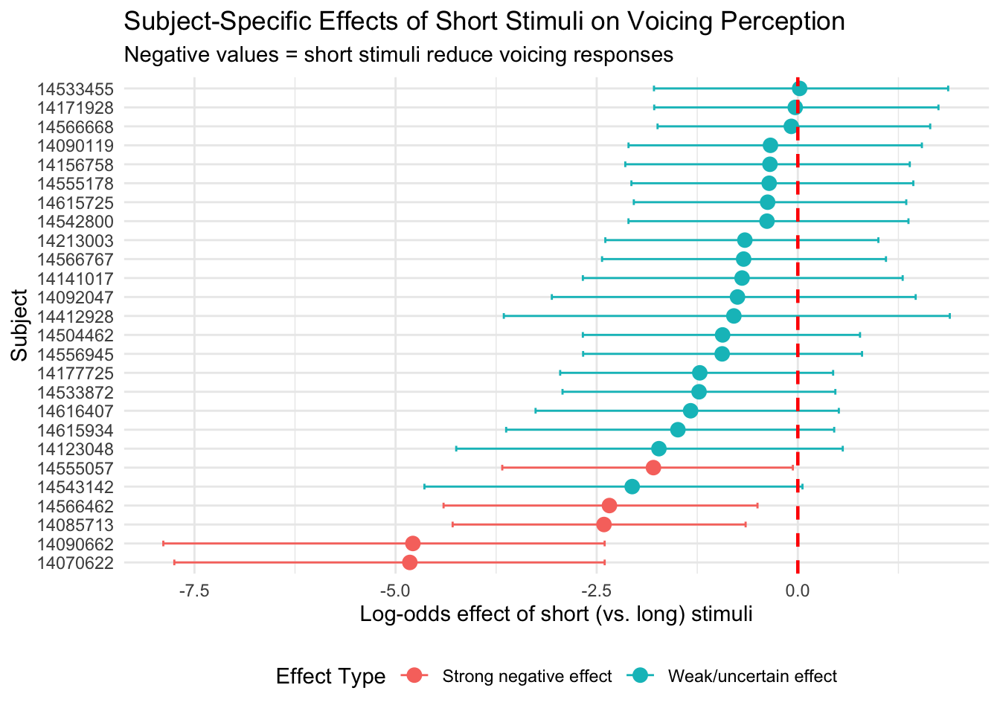
# ============================================================================
# 4. COMPARE MODEL ESTIMATES TO RAW DATA
# ============================================================================
# Calculate observed proportions by subject and condition
observed_props <- exp1_data %>%
mutate(sub = as.character(sub)) %>% # Ensure character type
group_by(sub, stim_length) %>%
summarise(
prop_voicing = mean(response_vc),
n_obs = n(),
.groups = "drop"
) %>%
pivot_wider(
names_from = stim_length,
values_from = c(prop_voicing, n_obs),
names_sep = "_"
) %>%
mutate(
raw_diff_long_minus_short = prop_voicing_long - prop_voicing_short,
raw_diff_short_minus_long = prop_voicing_short - prop_voicing_long
)
# Merge with model estimates
subject_comparison <- subject_slopes %>%
left_join(observed_props, by = c("subject" = "sub"))
# Plot: Model estimates vs raw differences
# Model estimates are for "short" effect (negative = short reduces voicing)
# So we want to compare with short - long difference (negative = short reduces voicing)
p2 <- ggplot(subject_comparison, aes(x = raw_diff_short_minus_long, y = estimate)) +
geom_point(aes(color = effect_category), size = 3) +
geom_errorbar(aes(ymin = lower_ci, ymax = upper_ci, color = effect_category),
alpha = 0.5) +
geom_smooth(method = "lm", se = TRUE, color = "black", linetype = "dashed") +
geom_abline(slope = 1, intercept = 0, linetype = "dotted", alpha = 0.3) +
labs(
title = "Model Estimates vs. Raw Data Differences",
subtitle = "Both axes: negative = short reduces voicing (should correlate positively)",
x = "Raw difference (prop short - prop long)",
y = "Model estimate (log-odds effect of short)",
color = "Effect Type"
) +
theme_minimal() +
theme(legend.position = "bottom")
print(p2)## `geom_smooth()` using formula = 'y ~ x'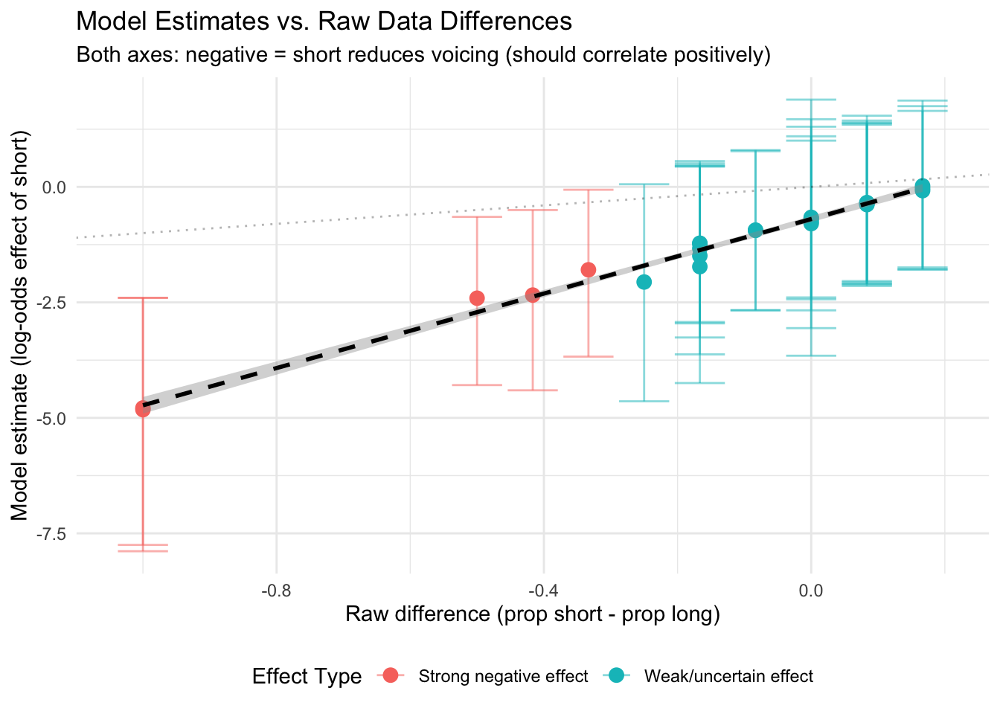
# ============================================================================
# 5. DISTRIBUTION OF EFFECTS
# ============================================================================
# Get population-level effect for comparison
pop_effect <- fixef(exp1_model_bayes)["stim_lengthshort", "Estimate"]
p3 <- ggplot(subject_slopes, aes(x = estimate)) +
geom_histogram(aes(fill = effect_category), bins = 10, alpha = 0.7) +
geom_vline(xintercept = pop_effect, linetype = "dashed",
color = "red", linewidth = 1) +
geom_vline(xintercept = 0, linetype = "solid", color = "black") +
annotate("text", x = pop_effect, y = Inf,
label = "Population\neffect", vjust = 1.5, color = "red") +
labs(
title = "Distribution of Subject-Specific Effects",
x = "Effect of short stimuli (log-odds)",
y = "Number of subjects",
fill = "Effect Type"
) +
theme_minimal() +
theme(legend.position = "bottom")
print(p3)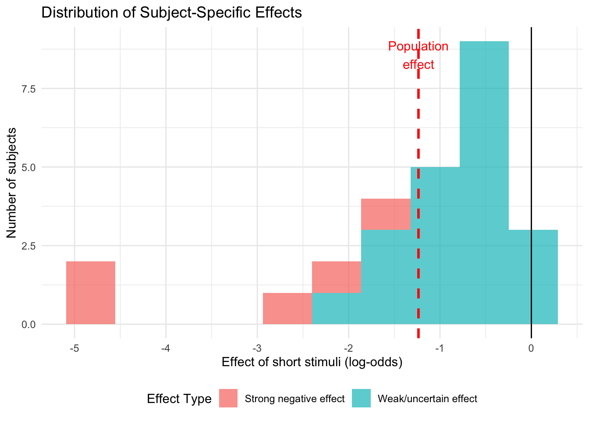
# ============================================================================
# 6. EXTRACT RANDOM EFFECTS (DEVIATIONS FROM POPULATION)
# ============================================================================
# Get just the random deviations (not including population effect)
random_effects <- ranef(exp1_model_bayes)$sub[, , "stim_lengthshort"]
random_slopes_only <- data.frame(
subject = rownames(random_effects),
deviation = random_effects[, "Estimate"],
lower_ci = random_effects[, "Q2.5"],
upper_ci = random_effects[, "Q97.5"]
) %>%
mutate(subject = as.character(subject)) # Ensure character type
cat("\n\nRANDOM EFFECT DEVIATIONS (from population mean):\n")##
##
## RANDOM EFFECT DEVIATIONS (from population mean):cat("=================================================\n")## =================================================print(random_slopes_only %>% arrange(desc(abs(deviation))))## subject deviation lower_ci upper_ci
## 14070622 14070622 -3.587161768 -6.3499644 -1.3867101
## 14090662 14090662 -3.549286634 -6.5150914 -1.3649137
## 14533455 14533455 1.258053621 -0.4514424 3.0988982
## 14171928 14171928 1.203564492 -0.4025249 2.9591928
## 14085713 14085713 -1.173778496 -2.9095319 0.5450510
## 14566668 14566668 1.154471723 -0.4586752 2.8230136
## 14566462 14566462 -1.106213059 -3.0060019 0.6178962
## 14090119 14090119 0.895365865 -0.7497196 2.6662288
## 14156758 14156758 0.888992631 -0.6998256 2.5121138
## 14555178 14555178 0.879351044 -0.7337595 2.6061312
## 14615725 14615725 0.860235677 -0.6992491 2.5309484
## 14542800 14542800 0.852296629 -0.7548901 2.5100473
## 14543142 14543142 -0.823287823 -3.0767474 1.1316628
## 14213003 14213003 0.577076750 -0.9525020 2.1707422
## 14566767 14566767 0.561857268 -1.0481400 2.2888928
## 14555057 14555057 -0.559129774 -2.2679804 1.0695275
## 14141017 14141017 0.542513484 -1.2249283 2.3897928
## 14123048 14123048 -0.491071769 -2.8600157 1.5060101
## 14092047 14092047 0.485619381 -1.6182180 2.5827600
## 14412928 14412928 0.440575599 -2.1909919 2.9532683
## 14504462 14504462 0.300315023 -1.3257516 1.9497497
## 14556945 14556945 0.295323548 -1.3171094 1.9987053
## 14615934 14615934 -0.255125482 -2.2403428 1.5102941
## 14616407 14616407 -0.097105493 -1.9127890 1.6726686
## 14177725 14177725 0.016864972 -1.6233703 1.6939380
## 14533872 14533872 0.007738804 -1.5988929 1.6295471# ============================================================================
# 7. CREATE SUBJECT SELECTION LISTS
# ============================================================================
# Create lists for filtering data
strong_effect_subjects <- subject_slopes %>%
filter(effect_category == "Strong negative effect") %>%
pull(subject)
weak_effect_subjects <- subject_slopes %>%
filter(effect_category == "Weak/uncertain effect") %>%
pull(subject)
cat("\n\nSUBJECT SELECTION LISTS\n")##
##
## SUBJECT SELECTION LISTScat("=======================\n\n")## =======================cat("Strong effect subjects (n =", length(strong_effect_subjects), "):\n")## Strong effect subjects (n = 5 ):cat(paste(strong_effect_subjects, collapse = ", "), "\n\n")## 14070622, 14085713, 14090662, 14555057, 14566462cat("Weak/uncertain effect subjects (n =", length(weak_effect_subjects), "):\n")## Weak/uncertain effect subjects (n = 21 ):cat(paste(weak_effect_subjects, collapse = ", "), "\n\n")## 14090119, 14092047, 14123048, 14141017, 14156758, 14171928, 14177725, 14213003, 14412928, 14504462, 14533455, 14533872, 14542800, 14543142, 14555178, 14556945, 14566668, 14566767, 14615725, 14615934, 14616407# You can now filter your data:
# exp1_data_strong <- exp1_data %>% filter(sub %in% strong_effect_subjects)
# exp1_data_weak <- exp1_data %>% filter(sub %in% weak_effect_subjects)
# ============================================================================
# 8. EXPORT RESULTS
# ============================================================================
# Save complete results
subject_results <- subject_comparison %>%
select(subject, estimate, lower_ci, upper_ci, effect_category,
prop_voicing_long, prop_voicing_short,
raw_diff_long_minus_short, raw_diff_short_minus_long,
n_obs_long, n_obs_short)
# Uncomment to save:
# write.csv(subject_results, "subject_specific_effects.csv", row.names = FALSE)
cat("\n\nAnalysis complete! Check the plots and tables above.\n")##
##
## Analysis complete! Check the plots and tables above.